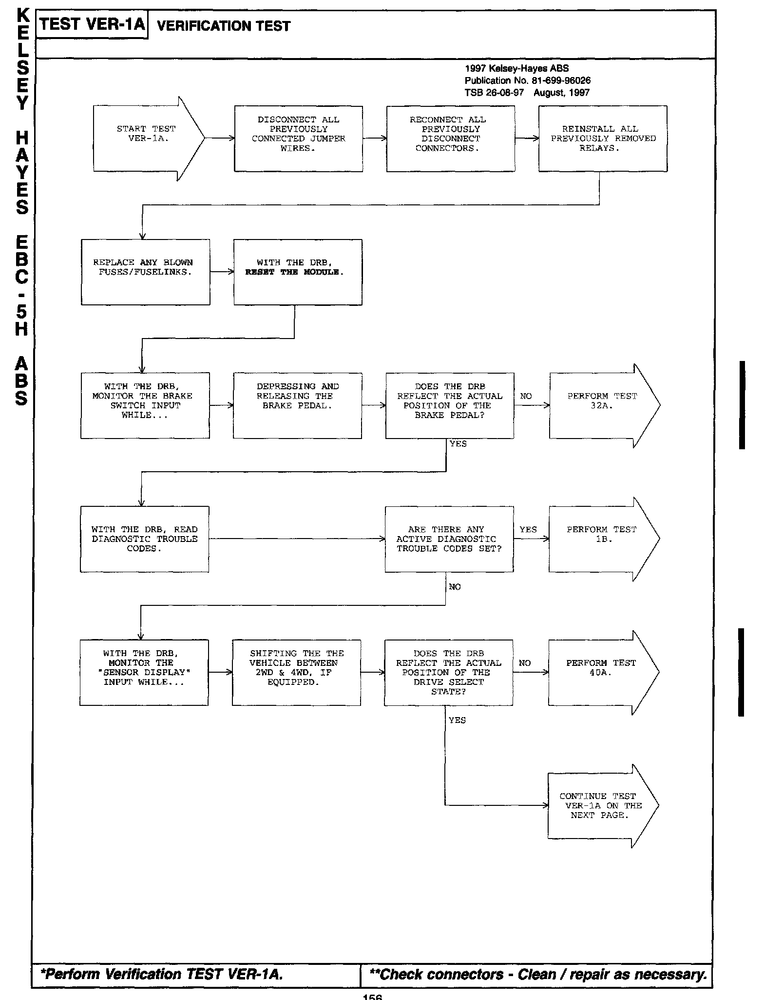
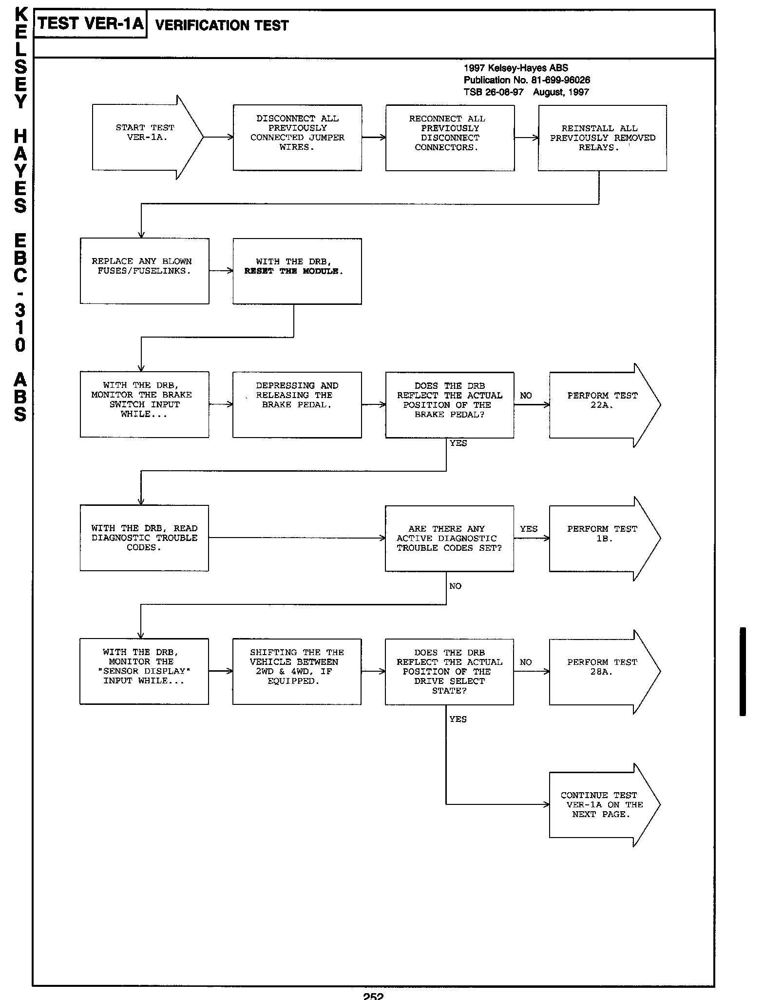

Brakes - Kelsey-Hayes ABS System Diagnostic Revisions
NUMBER: 26-08-97GROUP: Miscellaneous
DATE: August, 1997
REVISIONS ARE HIGHLIGHTED WITH BLACK BARS IN THE MARGIN
Models:
1997 Kelsey-Hayes ABS Diagnostic Manual - Publication Number 81-699-96026
DESCRIPTION OF CHANGES
Revisions to the diagnostic procedures
*D�O:

156
�x�O:

252